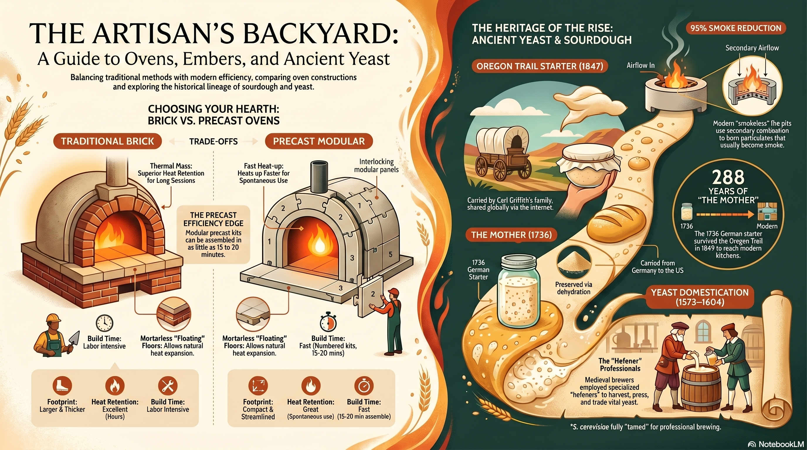

A tribute to the man, the legend, the sourdough whisperer.
Podcast Episode
🍕
Full Episode · ~20 min
Heritage Sourdough, Pizza Ovens & Lawrence Welk
A NotebookLM deep dive into George's world — the craft of sourdough, the science and soul of wood-fired pizza ovens, and the surprisingly rich legacy of Lawrence Welk. Equal parts technical and tender.
George Ball Bob Marnell — engineer, patriarch, and 75 years deep into a life well-lived.
His crafts: Sourdough baking at the level where he understands the microbiology. Pizza ovens where he understands the thermodynamics. Lawrence Welk where he understands something the rest of us are still working on.
His legacy: An engineering career that built things meant to last, a family that proves the point, and enough sourdough wisdom to fill a slide deck — which, as it happens, it did.
Infographic
AI-generated visual summary. Tap to expand.

Artisan Oven & Yeast Guide
The Slide Deck
📋
Engineering Legacy
AI-generated slide deck — a visual retrospective of George's life and craft